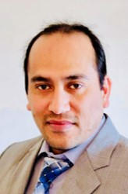

Faculty & Staffs
Research Faculties

Dr. Dolendra Karki
dok51[at]pitt[dot]eduDr. Dolendra Karki is a Research Assistant Professor at the MEMS Department, University of Pittsburgh. He received his Ph.D. degree in Physics from Michigan Technological University, Houghton, Michigan. Post-graduation and prior to joining U. Pitt in a senior research associate role, Dr. Karki pursued industry career for 2 years as an R&D scientist for developing magnetic garnet based on-chip devices for heterogeneous integration to silicon-photonics. He has an interdisciplinary research background that spans from fundamental science in experimental physics, materials science to nano-photonics. Currently, his research lead includes single crystal material growth of refractory oxides in optical fiber form and electro-magnetic field sensing for energy grid monitoring applications.
Dr. Khurram Naeem
khn16[at]pitt[dot]eduDr. Naeem is currently working as a Research Assitant Professor at the Swanson School of Engineering, University of Pittsburgh. He has earned his Master and PhD degrees in Information and Communication, both from the Gwangju Institute of Science and Technology (GIST), South Korea in 2010 and 2016, respectively. Thereafter, he has served in the Korea Research Institute of Standards and Science (KRISS), Daejeon from 2016 to 2018, and Advanced Photonics Research Institute (APRI), Gwangju from 2018 to 2022 as a senior Researcher. He has authored and co-authored several scientific publications in reputed international journals and conferences. His expertise and research interests include the development of specialty optical fibers / photonic crystal fibers, optical fiber devices for sensing and communication, fiber lasers, photonic device simulation using Full-vector FEM and FDTD methods, distributed optical fiber sensors and data analysis using ML and AI techniques.
Adminitrators
Jamie Krusienski
jak692[at]pitt[dot]eduJamie is an administrative assistant at the University of Pittsburgh, where she provides essential support to ensure smooth and efficient operations within the department. With over 17 years of management experience, Jamie is a seasoned professional who brings a wealth of knowledge and expertise to every role. She has honed her skills in leadership, strategic planning, and team development, driving success across various industries. In addition to her management prowess, Jamie has a strong background in social media, leveraging digital platforms to enhance brand visibility and engagement. Complementing her professional experience, Jamie holds a certification in health and wellness, reflecting her commitment to promoting a balanced and healthy lifestyle in a personal setting. Jamie is dedicated to continuous improvement, leveraging a diverse skill set to inspire teams, optimize operations, and achieve organizational goals.
Research Associates & Postdoctoral Researchers
Dr. Nagesh Lalam
NRL42[at]pitt[dot]eduDr. Lalam is a Visiting Senior Research Associate at the MEMS Department, University of Pittsburgh. Dr. Lalam received his Ph.D degree in Optical Engineering from the Northumbria University, Newcastle, UK in 2018. He obtained MSc degree in Optical Communications Engineering from the University of Greenwich, London, UK in 2012. Before joining University of Pittsburgh, he worked as a Postdoctoral Fellow at National Energy Technology Laboratory, where he was involved in development of both discrete and distributed fiber sensor systems for energy systems monitoring applications. He has authored or co-authored more than 30 articles in journals and international conferences and holds one US patent (pending). His research interests include distributed fiber optic sensors, non-linear fiber optics, radio-over-fiber communications, fiber laser systems, and interferometric fiber sensing.
Dr. Mohendro Kumar Ghosh
MKG57[at]pitt[dot]eduDr. Ghosh is a Visiting Research Associate in the Ohodnicki Lab. He received his B.Sc. in Electrical Engineering from Khulna University of Engineering & Technology (KUET), Bangladesh in 2012, M.Sc. and Ph.D. degree in Electrical Engineering from Saga University, Japan in 2016 and 2019, respectively, as a recipient of prestigious Japanese govt. scholarship (MEXT). His research interests include computational electromagnetics, magnetic field analysis and 2D/3D magnetic material modeling using numerical method (FEM), performance analysis of laminated steel plates and iron cores used in inverters, transformers, and motors by loss calculation, stress, noise and vibration analysis, frequency domain and time domain analysis, characteristics analysis of soft magnetic materials (Ferrite Core).
Chris Bracken
csb80[at]pitt[dot]eduChris is a Research Associate who received his B.S. in Electrical Engineering in the Circuits and Devices concentration from the University of Pittsburgh in 2015, as well as the Nanoscience and Engineering Certificate. Undergraduate work experience involved a Senior Design Project with Eaton and Undergraduate Research experience with Dr. Brian D’Urso’s Nanomaterials Research Group, being exposed to electronics design of a photodetector amplifier circuit for an optical trap and learning about growth and characterization of Graphene. Before joining the Ohodnicki Lab, Chris worked at Keystone Compliance and performed Electromagnetic Interference (EMI) tests for five years. Research interests include the standardization and characterization of magnetic materials, as well as potentially exploring electromagnetic interference with materials. In his spare time, he enjoys music, running, photography, and reading (particularly philosophy).
Dr. Tulika Khanikar
tuk11[at]pitt[dot]eduDr. Khanikar is a Visiting Research Associate in the Ohodnicki lab, MEMS Department, University of Pittsburgh. She received her B.Sc. degree in Physics from Dibrugarh University, India in 2014, M.Sc. and Ph.D. degrees from the Department of Physics, Indian Institute of Technology (Indian School of Mines) Dhanbad in the year 2016 and 2022, respectively. Her research expertise and interests include optical fiber sensors functionalized with stimuli responsive materials, fiber optic sensor modelling using FEM, surface plasmon resonance sensing, fiber optic acoustic sensing for pipeline monitoring using NDE methods.
Dr. Sai Sree Varahabhatla
smv78[at]pitt[dot]eduSaisree holds a Bachelor’s degree in Metallurgical and Materials Engineering from the National Institute of Technology, Jaipur, and a Doctor of Philosophy from the University of North Texas. Her doctoral research focused on the additive manufacturing of soft magnetic materials. Saisree’s research interests include physical metallurgy, additive manufacturing, and magnetism. In her spare time, she enjoys hiking and exploring the outdoors.